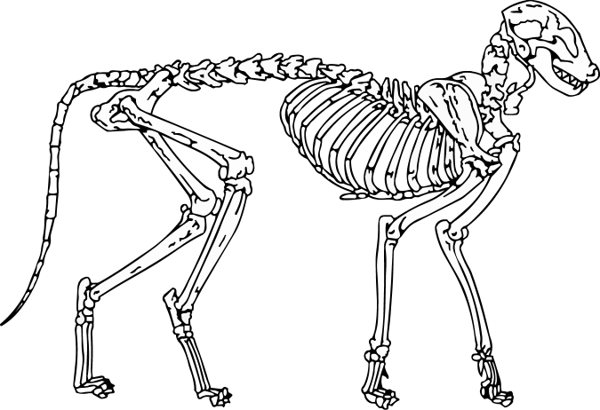

Cat Stop
Your go-to stop for everything cats, since 2018
What is a cat?
The domestic cat Belis silvestris catus is a small, typically furry, carnivorous mammal.
They are often called house cats when kept as indoor pets or simply cats when there is no need to distinguish them from other felids and felines.
They are often valued by humans for companionship and for their ability to hunt vermin.

They can see in near darkness.
Like most other mammals, cats have poorer color vision and a better sense of smell than humans.
Cats are a social species and cat communication includes the use of a variety of vocalizations.
Cats have a high breeding rate.
Under controlled breeding, they can be bred and shown as registered pedigree pets, a hobby known as cat fancy.
Failure to control the breeding of pet cats by neutering, as well as the abandonment of former household pets, has resulted in large numbers of feral cats worldwide, requiring population control.